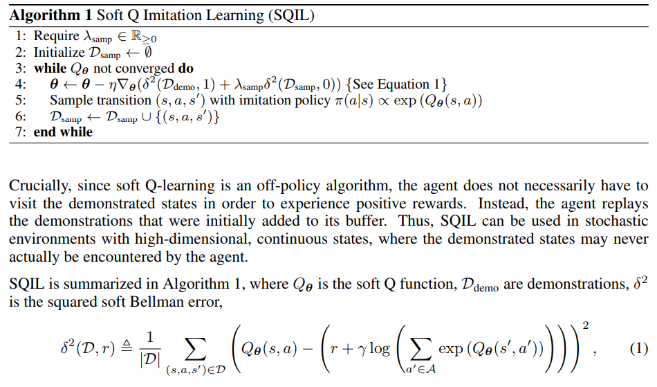

Updated in Nov 7th, 2019:
审稿结果已出，今年评分结果有点出乎意料，之前看过的不少觉得还不错的文章都拿了低分，反而有一些觉得比较普通的文章拿了高分。。。
有github大佬已经做好了打分表，见 ICLR2020-OpenReviewData#Data，以下主要扫一遍这个表中的高分paper
High rating interesting papers
SQIL: Imitation Learning via Reinforcement Learning with Sparse Rewards
得分668
This paper proposes an imitation learning approach via reinforcement learning. The imitation learning problem is transformed into an RL problem with a reward of +1 for matching an expert’s action in a state and a reward of 0 for failing to do so. This encourages the agent to return to “known” states from out-of-distribution states and alleviates the problem of compounding errors
这篇本章提出的方法在代码实现层面非常简单，这里我们考虑用actor-critic的off-policy结构实现，假设算法一开始有一个expert model，每次agent与环境交互时，若agent的动作与expert的动作选择相同，则为这条样本赋+1的reward，反之则给0的reward

作者称他们的这套方法可以与任意off-policy RL算法结合，实质上相当于behavior cloning的正则化版本
文章中作者采用的基础off-policy RL算法是SAC，在SAC的背景下我们可以这样解读作者提出的方法：对于demonstration中出现过的state，鼓励模型以更高的概率访问这些state；而对于demonstration中未出现过的state，则给予模型negative feedback让模型以更低的概率访问该state，并最大化模型在这些state上的entropy
Measuring the Reliability of Reinforcement Learning Algorithms
提出了一个新的evaluation metric来衡量RL算法的reliability
Observational Overfitting in Reinforcement Learning
A major component of overfitting in model-free reinforcement learning (RL) involves the case where the agent may mistakenly correlate reward with certain spurious features from the observations generated by the Markov Decision Process (MDP).
与我毕业论文正在做的工作强相关，作者声称状态转移动态对于policy的泛化能力有non-trivial的影响，基于深度学习的RL模型很容易将state中的某些特征与reward错误地联系起来，产生题目中的ovservational overfitting效应；本文主要是发现了这种现象并通过实验说明为什么这种现象是non-trivial的，并没有提出新的解决方案，但实验部分比较充分，值得学习借鉴
Is a Good Representation Sufficient for Sample Efficient Reinforcement Learning?
The authors challenge the idea that good representation in RL lead are sufficient for learning good policies with an interesting negative result — they show that there exist MDPs which require an exponential number of samples to learn a near-optimal policy even if a good-but-not-perfect representation is given to the agent for both value-based and policy-based learning.
一篇理论RL的文章，提出的观点很有趣，作者证明存在一个exponential lower bound for policy-based and value-based RL algorithms with function approximation
Robust Reinforcement Learning for Continuous Control with Model Misspecification
这篇文章已经写过，出自deepmind之手，个人认为这篇文章处理环境动态的distributional shift的方式略显不妥，虽然前面作者有证明这种robust operator是一个contraction，但实验是直接用hand-selected hyperparameter来让模型在不同环境中训练的，几个reviewer也有提出类似的问题：
If there are, e.g., 20 parameters, and one picks 3 values for each, there are 3^20 variations of the environment. This exponential growth seems problematic, which is also mentioned by R3.
值得一提的是reviewer 3给出了一份长长的reference list，大部分研究都与解决RL robustness to action stochasticity与robustness to dynamics相关，值得学习，这里复制过来方便后面参考
Robustness to Dynamics:
- Bart van den Broek, Wim Wiegerinck, and Hilbert J. Kappen. Risk sensitive path integral control. In UAI, 2010.
- Arnab Nilim and Laurent El Ghaoui. Robust control of markov decision processes with uncertain transition matrices.Operations Research, 53(5):780–798, 2005
- Wolfram Wiesemann, Daniel Kuhn, and Berc Rustem. Robust markov decision processes. Mathematics of Operations Research, 38(1):153–183, 2013.
- Lars Peter Hansen and Thomas J Sargent.Robustness. Princeton university press, 2008
- Yun Shen, Michael J Tobia, Tobias Sommer, and Klaus Obermayer. Risk-sensitive reinforcement learning. Neural computation, 26(7):1298–1328, 2014.
- Yinlam Chow, Aviv Tamar, Shie Mannor, and Marco Pavone. Risk-sensitive and robust decision-making: a cvar optimization approach. In Advances in Neural Information Pro-cessing Systems, pages 1522–1530, 2015.
Robustness to Action Stochasticity:
- Roy Fox, Ari Pakman, and Naftali Tishby. G-learning: Taming the noise in reinforcement learning via soft updates.arXiv preprint arXiv:1512.08562, 2015.
- Jonathan Rubin, Ohad Shamir, and Naftali Tishby. Trading value and information in mdps.In Decision Making with Imperfect Decision Makers, pages 57–74. Springer, 2012.
- Daniel A Braun, Pedro A Ortega, Evangelos Theodorou, and Stefan Schaal. Path integral control and bounded rationality. In Adaptive Dynamic Programming And ReinforcementLearning (ADPRL), 2011 IEEE Symposium on, pages 202–209. IEEE, 2011.
Combination of both:
- Grau-Moya, Jordi, et al. “Planning with information-processing constraints and model uncertainty in Markov decision processes.” Joint European Conference on Machine Learning and Knowledge Discovery in Databases. Springer, Cham, 2016.
Improving Generalization in Meta Reinforcement Learning using Neural Objectives
我之前很早就有考虑过meta-learning对于学习具有泛化能力的RL模型应该是一个有效的方法，但由于meta learning本身可以说是纯粹的实验科学，缺乏理论支撑，要想说明这个思路的非平凡性也并不容易
This paper proposes a meta-RL algorithm that learns an objective function whose gradients can be used to efficiently train a learner on entirely new tasks from those seen during meta-training.
A. RL part
Implementation Matters in Deep RL: A Case Study on PPO and TRPO
We investigate the consequences of “code-level optimizations” in TRPO and PPO: algorithm augmentations found only in implementations or described as auxiliary details to the core algorithm. Seemingly of secondary importance, such optimizations have a major impact on agent behavior. Our results show that they (a) are responsible for most of PPO’s gain in cumulative reward over TRPO, and (b) fundamentally change how RL methods function.
Updated after the reviewing: 审稿结果已出，结果啪啪打脸，所有的审稿人都认为这篇文章会对RL community的reproductivity有很大好处
这次的结果让我想起有位知乎老哥写了一篇文章吐槽OpenAi Gym MuJoCo，其中提到Humanoid的alive bonus被设置到了极其不科学的5，去掉alive bonus的话PPO也能得到8000分以上的高分。2019年以来，很多迹象表明虽然RL社区一片热闹非凡的景象，但相比于2017年来说model-free RL并没有非常本质性的突破，之后的一些算法可能只是overfitting到了benchmark的一些特殊的结构特性上，并没有能够真正带来更低的sample complexity或更好的generalization abiity
我还记得我作为RL初心者入行的时候学习到multi-modal policy是当前RL的一个重大难题，但对比SAC与SQL的实验结果也不难发现一个令人丧气的事实：理论上严谨的SVGD并没有带来更好的实验结果，反而是Gaussian policy训练加上deterministic evaluation的SAC已经足以在Humanoid上达到6000分以上的表现。这样的事实可能对于RL还有点新鲜，但在CV或NLP中早就被广泛承认：炼丹再次战胜了严谨的分析与推导
目前的RL还远不够成熟，MuJoCo作为主流benchmark的时代应当逐渐走远，未来的RL社区需要更硬核的benchmark，需要更科学的evaluation metric以及面对随机性与distributional shift更加robust的算法
abstract中非常直白地发牢骚，作者指出PPO相比TRPO的performance gain主要来源于论文里的一些细节，而不是PPO文章中claim的那些改进，如果将PPO实现中的一些代码细节同等地放在TRPO中，那么TRPO可以达到至少是与PPO同等的水平，甚至多数情况下还会更高
我觉得这个结果完全不值得惊讶，当前的RL社区Berkeley+OpenAI几乎独占了半壁江山，以每年二三十篇的速度产出顶会论文，每篇文章都会claim说自己在benchmark上刷到了sota；然而事实是很多算法细节与代码实现都受到了不同层面的质疑
A Generalized Training Approach for Multiagent Learning
This paper investigates a population-based training regime based on game-theoretic principles called Policy-Spaced Response Oracles (PSRO).
Here, we extend the theoretical underpinnings of PSRO by considering an alternative solution concept, α-Rank, which is unique (thus faces no equilibrium selection issues, unlike Nash) and tractable to compute in general-sum, many-player settings.We also carry out an initial empirical validation in MuJoCo soccer, illustrating the feasibility of the proposed approach in another complex domain.
最后的实验是MuJoCo Soccer，应该可以排除这篇文章是DeepMind的工作的可能性。之前DeepMind已经有工作指出PSRO+population-based training可以得到two-player zero-sum game的Nash equilibrium，本文研究的问题是环境中存在超过两个agent时（general-sum game）如何解Nash equilibrium，作者提出的方法在general-sum games问题上有收敛性保障
Robust Reinforcement Learning via Adversarial Training with Langevin Dynamics
We re-think the Two-Player Reinforcement Learning (RL) as an instance of a distribution sampling problem in infinite dimensions. Using the powerful Stochastic Gradient Langevin Dynamics, we propose a new two-player RL algorithm, which is a sampling variant of the two-player policy gradient method. Our new algorithm consistently outperforms existing baselines, in terms of generalization across differing training and testing conditions, on several MuJoCo environments.
看标题就被吸引了，感觉是非常有趣的一篇文章，作者声称自己的方法在generalization问题上outperform已有的baseline，最后实验效果做出来也很不错，可以关注一波后续reviewer的评价
- 问题一：如何度量现有模型的robustness呢？文中的方法是在MuJoCo的实验中调整参数
relative mass - 问题二：Langevin dynamic是什么？作者idea的核心是Langevin dynamic，这是非凸优化领域一种性质比较好的解minimax问题的算法，本质是梯度加高斯噪声，有收敛保障
- 问题三：baseline是什么？作者在实验中对比的baseline是不加噪声的普通adversarial training with RMSProp optimizer
- 问题四：adversarial training内层的maximization目标是什么？这篇文章中的设定是action space同时受到两个player的影响，假设两个agent分别为 $\mu_{\theta}$ 和 $v_{w}$ ，那么最后实际与环境交互的action为 $a_{t}=\delta\mu_{\theta}(s_{t})+(1-\delta)v_{w}(s_{t})$ ,文章中用的基础算法是DDPG，梯度可以直接通过critic传递到 $\mu_{\theta}$ 和 $v_{w}$ 的参数中
Rularization Matters in Policy Optimization
这是一篇benchmark性质的文章，全文基本只有empirical evaluation，但实验非常solid，研究的问题是传统机器学习与深度学习中的正则化方法对于强化学习算法的影响
对比supervised learning (SL)与reinforcement learning (RL)，我们可以看到很多传统的正则化方式，包括$\ell_{2}$、dropout，weight clipping等方法，在SL中都有非常广泛的应用，如最早版本的ResNet和RCNN都是默认加$\ell_{2}$正则的，transformer中加了dropout正则，而之后的BERT模型中dropout换成了$\ell_{2}$，应当说，目前的绝大多数sota方法中都或多或少存在这些传统正则化的影子
相比之下，RL算法中很少可以看到这一类的正则化，取而代之最常用的是entropy正则，在policy-based方法中，为了避免模型过早过拟合到某种suboptimal的策略上，研究者们常常采用entropy正则来避免模型执行某一个action的概率过高或过低；PPO方法中的entropy正则体现在损失函数中直接explicitly出现了policy的entropy项，而SQL与SAC方法中entropy则直接成为了模型优化的最终目标一部分
为什么RL领域中很少用到SL里的正则化方法呢？作者认为其中一个可能的原因在于目前的RL方法训练环境与测试环境完全相同，因而RL的模型不需要像SL的模型一样具备在不同的测试环境中的泛化能力。本文的研究中，作者发现传统的正则化方法往往可以对复杂任务的performance有很大提升，通过比较传统的$\ell_{2}$正则与entropy正则，作者发现$\ell_{2}$正则往往可以的得到更好的泛化性能，且对训练的超参更加不敏感
这里总结记录一些文章中的empirical conclusion
- Only regularizing the policy network is typically enough, regularizing $V^{\pi}$ or $Q^{\pi}$ does not help on the performance
- $\ell_{2}$ regularization outperforms entropy regularization in many cases
- $\ell_{1}$ and weight clipping can sometimes boost performance
- Dropout and batch norm tend to bring improvements on only on off-policy SAC
B. Adversarial learning part
Global Adversarial Robustness Guarantees for Neural Networks
Given a neural network f we investigate the global adversarial robustness properties of f, showing how these can be computed up to any a priori specified statistical error.
We empirically observe that robustness and accuracy tend to be negatively correlated for networks trained via stochastic gradient descent and with iterative pruning techniques, while a positive trend is observed between them in Bayesian settings.
Invariance vs Robustness of Neural Networks
Previous work has studied generalization to natural geometric transformations (e.g., rotations) as invariance, and generalization to adversarial perturbations as robustness.
In this paper, we examine the interplay between invariance and robustness. We empirically study the following two cases:(a) change in adversarial robustness as we improve only the invariance using equivariant models and training augmentation, (b) change in invariance as we improve only the adversarial robustness using adversarial training. We observe that the rotation invariance of equivariant models (StdCNNs and GCNNs) improves by training augmentation with progressively larger rotations but while doing so, their adversarial robustness does not improve, or worse.
简单来说，这篇文章用前人提出的equivariant model来测试对抗样本性质的旋转变换等操作，发现虽然模型的invariance随训练而提升，但模型对人为优化出的旋转变换对抗样本的鲁棒性反而下降了
Fast is better than free: Revisiting adversarial training
FGSM-based adversarial training, with randomization, works just as well as PGD-based adversarial training: we can use this to train a robust classifier in 6 minutes on CIFAR10, and 12 hours on ImageNet, on a single machine.
这篇文章的评论区目前已经是非常热闹，很多人在问通过作者给的源码复现不出来作者文章中的结果
BayesOpt Adversarial Attack
We propose a query-efficient black-box attack which uses Bayesian optimisation in combination with Bayesian model selection to optimise over the adversarial perturbation and the optimal degree of search space dimension reduction.
We demonstrate empirically that our method can achieve comparable success rates with 2-5 times fewer queries compared to previous state-of-the-art black-box attacks.
可以比之前的方法减少2-5倍的query次数还是很厉害的，扫了一眼实验也比较solid，但还是感觉现在纯做attack不好发文章，即使是balck-box attack
C. 大佬们的文章
Truth or backpropaganda? An empirical investigation of deep learning theory
初看标题时查了好半天backpropaganda的意思，很久以后才有点明白过来，大概不是英语母语者很难瞬间get到这个词中包含的笑点吧2333
We empirically evaluate common assumptions about neural networks that are widely held by practitioners and theorists alike. We study the prevalence of local minima in loss landscapes, whether small-norm parameter vectors generalize better (and whether this explains the advantages of weight decay), whether wide-network theories (like the neural tangent kernel) describe the behaviors of classifiers, and whether the rank of weight matrices can be linked to generalization and robustness in real-world networks.
如果文章没有大的纰漏，感觉会是一篇在deep learning theory领域引起巨大反响的文章，从往年来看，一般这类反响剧烈的文章都是奔着best paper去的，应该是一篇不错的文章，可以一读
Information Geometry of Orthogonal Initializations and Training
Recently mean field theory has been successfully used to analyze properties of wide, random neural networks. It gave rise to a prescriptive theory for initializing feed-forward neural networks with orthogonal weights, which ensures that both the forward propagated activations and the backpropagated gradients are near `2 isometries and as a consequence training is orders of magnitude faster.
大佬的工作连abstract读起来都吃力，应该是一篇很硬核的文章，作者做的工作主要包括
- 作者发现了loss surface上最大曲率 (which is measured by FIM) 是如何与spectral radius of the input-output Jacobian相关的，这在某种程度上解释了为什么orthogonal initialization训练速度比其他方法快几个数量级
- 已知正交初始化可以保障gradient的norm在训练前期几乎不发生改变，作者实验研究了在训练中维持参数空间正交的好处，得出结论：manifold optimization of weights performs well regardless of the smoothness of the gradients
- 作者最后还联系了Fisher geometry与最近提出的neural tangent kernel之间的联系
Neural tangent kernels, transportation mappings, and universal approximation
The NTK linearization is a universal approximator, even when looking arbitrarily close to initialization.
不熟悉neural tangent kernel，拜就对了
233. Researchers迷惑行为大赏
I love your chain mail! Making knights smile in a fantasy game world
Agents interact (speak, act) and can achieve goals in a rich world with diverse language, bridging the gap between chit-chat and goal-oriented dialogue.

Learning to Prove Theorems by Learning to Generate Theorems
We consider the task of automated theorem proving, a key AI task. Deep learning has shown promise for training theorem provers, but there are limited human-written theorems and proofs available for supervised learning. To address this limitation, we propose to learn a neural generator that automatically synthesizes theorems and proofs for the purpose of training a theorem prover. Experiments on real-world tasks demonstrate that synthetic data from our approach significantly improves the theorem prover and advances the state of the art of automated theorem proving in Metamath.
以前就听说有做物理的人用deep learning来模拟流体力学方程，学习PDE等等，直到看到这篇文章发现原来还能这样
How to 0wn the NAS in Your Spare Time
注：这里的NAS指的是neural architecture search
乱码文章标题始祖
We implement our algorithm on PyTorch and Tensorflow. We demonstrate experimentally that we can reconstruct MalConv, a novel data pre-processing pipeline for malware detection, and ProxylessNAS-CPU, a novel network architecture for the ImageNet classification optimized to run on CPUs, without knowing the architecture family. In both cases, we achieve 0% error.
BREAKING CERTIFIED DEFENSES: SEMANTIC ADVERSARIAL EXAMPLES WITH SPOOFED ROBUSTNESS CERTIFICATES
Defenses against adversarial attacks can be classified into certified and non-certified. Certifiable defenses make networks robust within a certain $\ell_p$-bounded radius, so that it is impossible for the adversary to make adversarial examples in the certificate bound. We present an attack that maintains the imperceptibility property of adversarial examples while being outside of the certified radius.
标题党，本来以为作者是说certified defense在实践中会出现实际不符合预期的情况，实际只是说在semantic的意义上做优化，最终得到的adversarial examples既可以骗过神经网络又可以跑到 $\ell_{p}$ bound之外
那么这样做的意义是什么？和姚明比较说姚明打三国杀不如我？
ARTIFICIAL DESIGN: MODELING ARTIFICIAL SUPER INTELLIGENCE WITH EXTENDED GENERAL RELATIVITY AND UNIVERSAL DARWINISM VIA GEOMETRIZATION FOR UNIVERSAL DESIGN AUTOMATION (FAR FROM THE MADDING CROWD: HOW TO BE SHALLOW TO AVOID GOT LOST IN DEEP FOREST?)
题目振聋发聩，广义相对论，泛达尔文主义，deep forest，黎曼几何，超级人工智能，Figure 1的两张子图分别是道德经和太极
目前该文章被怀疑是由BERT生成，其训练集见Appendix一节